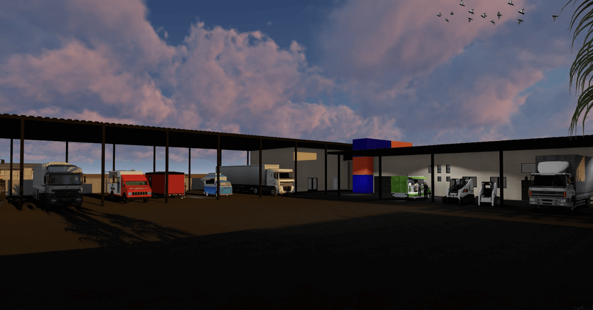

פרויקט הקמת מפעל אוטו טק בערד כלל ביצוע של מבנה תעשייה בהיקף של כ־2,000 מ"ר, תוך הקפדה על תכנון מדויק, תיאום בין כלל הגורמים המקצועיים ועמידה בסטנדרטים גבוהים של ביצוע.
הפרויקט משקף שילוב בין תכנון הנדסי, ביצוע מקצועי וניהול מוקפד של תהליך העבודה, תוך שמירה על איכות גבוהה ועמידה ביעדי הפרויקט.
